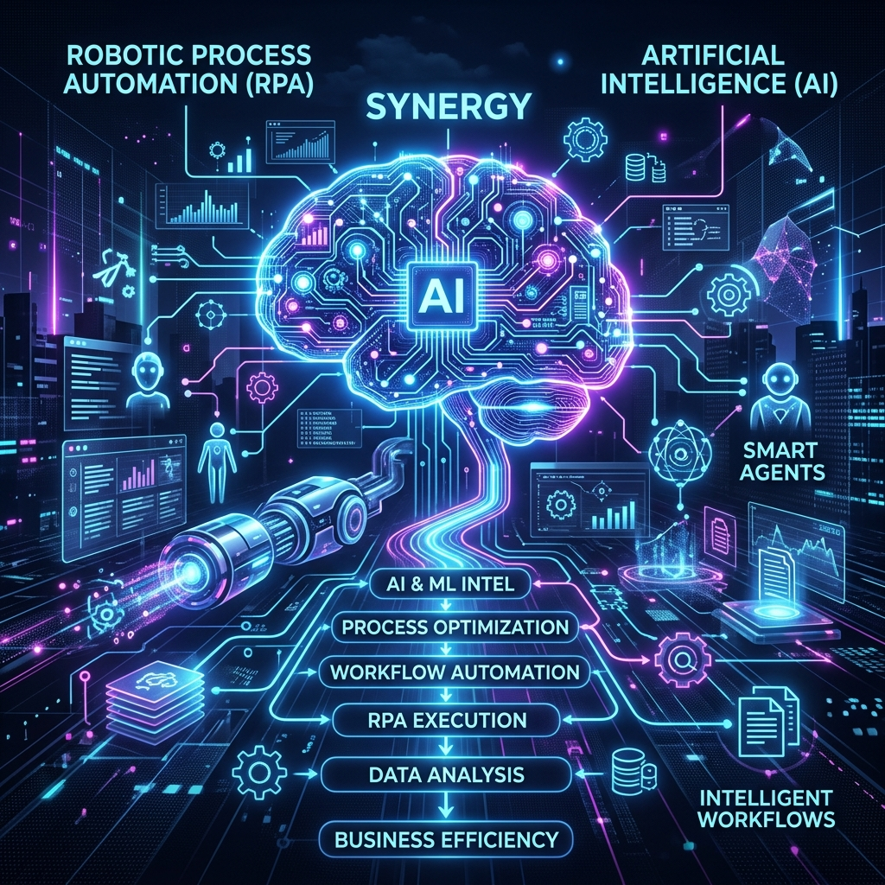

Robotic Process Automation (RPA) + AI: Moving from "dumb" bots to intelligent agents.
See how the next wave of automation is reshaping the way businesses operate with smart agents that learn, adapt, and anticipate needs.

The synergy of RPA's execution and AI's context awareness creates true intelligent agents.
🚀 Ready to see how the next wave of automation is reshaping the way businesses operate? Imagine a world where repetitive tasks are handled by smart agents that learn, adapt, and even anticipate your needs—no human intervention required. That world is unfolding today, powered by the dynamic duo of Robotic Process Automation and Artificial Intelligence.
In a recent survey, an astounding 92% of businesses reported that RPA helped them meet compliance standards more reliably, while 86% saw a clear boost in overall productivity. Even more compelling is that 59% of companies experienced significant cost reductions, and a striking 89% of employees feel more productive when they can delegate mundane chores to bots. These numbers paint a vivid picture: RPA is no longer a niche tool; it’s a cornerstone of modern enterprise efficiency.
The Power of Versatility
What makes RPA + AI so powerful is its versatility. From automatically transferring data between systems to updating customer profiles in real time, these intelligent agents handle a wide array of activities that once required manual effort. They excel in data entry, inventory management, and even complex decision‑making tasks that involve rule‑based logic and pattern recognition. By combining RPA’s rule‑based execution with AI’s ability to understand context, businesses can streamline operations, reduce human error, and free up staff to focus on higher‑value work.
Industries Reaping the Benefits
Industries across the spectrum are already reaping the benefits. In the public sector, home‑care support teams use RPA to track patient needs and schedule visits, while housing authorities automate benefit claims and council tax calculations. Rental companies rely on bots to adjust rent prices based on market data, and financial institutions use automated direct debit instructions to improve cash flow. These real‑world use cases demonstrate how RPA + AI can be tailored to meet the unique challenges of any sector, driving both compliance and customer satisfaction.
Looking Ahead to 2025 and Beyond
Looking ahead, the trend is clear: intelligent agents will dominate, hyper‑automation will become the norm, and the integration of RPA with machine learning and natural language processing will unlock new levels of sophistication. Generative AI will enable bots to create content, draft reports, and even draft emails—making them true partners rather than simple assistants. As these technologies mature, businesses that adopt them early will not only stay competitive but set new industry standards.
What role do you see RPA + AI playing in your organization’s future?
#AutomationFuture #SmartBots #AIRevolution #BusinessEfficiency #DigitalTransformation #KaushalPithadia #KaushalWrites 🚀